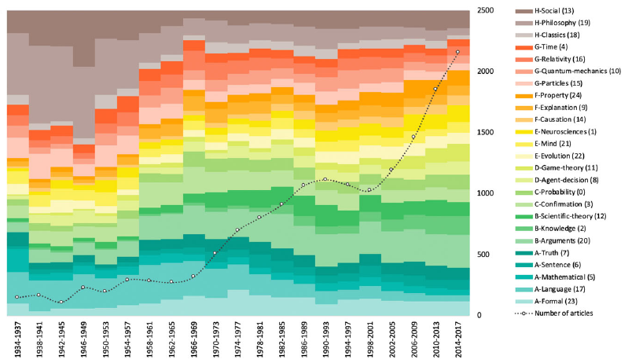

Computational social science meets ecology I
What is computational social science?
Broadly speaking, computational social science (CSS) is an umbrella term for social scientists who started to use computational methods to analyze social phenomena through large-scale datasets (Lazer et al. 2009). The meaning of the computational label in front of the social science can be found in the following description of the computational thinking course offered at MIT:
This is an introductory course on Computational Thinking. We use the Julia programming language to approach real-world problems in varied areas applying data analysis and computational and mathematical modeling. In this class you will learn computer science, software, algorithms, applications, and mathematics as an integrated whole.
Much to the dismay of those entering the field, CSS is really about combining domain expertise in one’s own discipline (which itself can be interdisciplinary), fluency in computational and mathematical modeling, and good programming practices in ways that actually answer relevant questions. Easy peasy. While it may seem overwhelming, there are now computational shortcuts to compensate for the lack of mathematical capabilities (knowing what is an integral is important, but knowing how to solve them is not absolutely necessary) and friendly online resources to start learning all of these skills.1
Let me give you an example to make this whole CSS idea more concrete.
Where I come from…
I got into CSS from philosophy of science, where I collaborated on a project at the LAPS that sought to examine how the interests in our own field evolved through time. That is, we know that at some point we, as a field, were really into language and logic. Later on, different communities began to work on the problem of induction and the demarcation problem, and others got interested by biology, models, physics, and the mind. But how exactly? Which journal in philosophy of science contributed the most to which part of the collective discussion? And to what extent our experience as embodied minds, shaped by particular institutions and influences, is reflective of the whole story? Are there some blind spots we fail to acknowledge?
To answer the question above, we scraped 8 key journals over 8 decades in Philosophy of Science. We pre-processed and cleaned the corpora to be in a machine-readable format (this is definitely more work than one might think at first glance, especially when you hire master students with no prior experience to do some of it 👋). We then examined how topics changed across time using techniques such as the Latent Dirichlet Allocation. Informally, topics are hidden variables that impose order on a constellation of words. For example, human, genome, dna and genetic all make sense under the banner Genetics. Importantly, topics are said to be latent because they are never observed.
All in all, one way to summarize how the interests of philosophers changed in the last 8 decades is with the following figure:

In this figure, the colors represent 25 topics found between 1934 and 2017, and the area is proportional to the space occupied by the topics with respect to the whole discussion at that particular time (with the number of articles as dotted lines). For example, between 1946 and 1949, much of the discussion was about philosophy itself (by that we mean traditional philosophy or history of philosophy) and language, while in the 2000s the discussion is much more segregated and focused on specific disciplines. In the legend, we can also see that topics themselves are clustered in meta-communities (as shown by the cluster letters). If you would like to learn more about this project, please see our article Eight journals over eight decades: a computational topic-modeling approach to contemporary philosophy of science.
This is a typical example of what we do in CSS. We (philosophers, who are not particularly recognized for their use of coding in the field) analyzed a large-scale dataset to answer questions motivated by philosophy of science, and, in this case, is about philosophy of science.
Wait. What I just described. Isn’t that digital humanities?
Are CSS and digital humanities (DH) the same? Well, yes and no. Yes because the above CSS definition can and do certainly apply to DH. Moreover, in french-speaking world, it seems the most common translation of computational social science is digital humanities (les humanités numériques). At the same time, I can think of at least three main differences between DH and CSS:
(i) type of data under study:As opposed to computational social scientists who tend to analyze contemporary text data that originate from our digital traces, digital humanists analyze cultural artifacts of all shapes and sizes with books, letters, maps, historical documents, paintings and other works of art of all kinds we find in museums and archives. As such, digital humanists are much more engaged with domain-specific data who require particular knowledge and often has been neglected by computer scientists who lack this knowledge.2 It is not to say that computational social scientists never study books or manuscript letters, but I find it a useful rule of thumbs to distinguish the two.(ii) authors background:Digital humanists are, well, from the humanities. Looking at the many scholars participating to the ongoing book Debates in the Digital Humanities, we mostly find English teachers, librarians, historians, and digital media researchers. Although I might be wrong, I think this is representative of the field. CSS seems to have inherited the physics-minded people. And in my view this is the distinguishing feature between DH and CSS. In a seminal paper of the field, Life in the network: the coming age of computational social science (Lazer et al. 2009), we have computer scientists, physicists, political scientists, and sociologists discussing social physics. As a result, we find that the former group rarely use mathematical modeling and simulation to study social phenomena, while the latter tend to see people, and all of their history, as points in space.(iii) how the field came to be:Finally, a simple way to find out if you are doing DH or CSS is to simply ask people around you who they think are the main players in their field. If the answer has something to do with the Santa Fe institute, you are doing CSS. If the answer directs you to an essay, you are in DH.
This distinction is most certainly an oversimplification. A case in point, this article suggests that DH can at least be understood in 3 different ways. In any case, I hope you’ll find the above distinction useful. Feel free to disagree and send me articles to correct my view.
In this first blog post, I introduced the first half of the title. In the next one, we’ll go over how computational social science can provide interesting insights to practitioners in science. In this case, ecologists.
CSS resources
- Chris Bail (Duke University - Political scientist): https://cbail.github.io/textasdata/Text_as_Data.html
- Pedro Smaldino (UCMerced - Cultural Evolutionist): http://www.dysoc.org/cesmodules/social_dynamics_module/
- Scott Page (UMichigan - Economists): https://www.coursera.org/learn/model-thinking
- Julia Silge & David Robinson Tidytext book: https://www.tidytextmining.com/index.html
- Quanteda Text Analysis with R for Students of Literature (Kennett Benoit et al.): https://quanteda.io/articles/pkgdown/replication/digital-humanities.html
Reference
-
For those who are interested, there are some great CSS resources at the end of the post ↩︎
-
For a good example of what I mean by that, check out historian Jesse’s Sadler Blog ↩︎
Jonathan St-Onge
Intern CMB Computational Social Science team
A former philosopher of science and cognitive scientist, Jonathan St-Onge now purses his interest in computational social science.